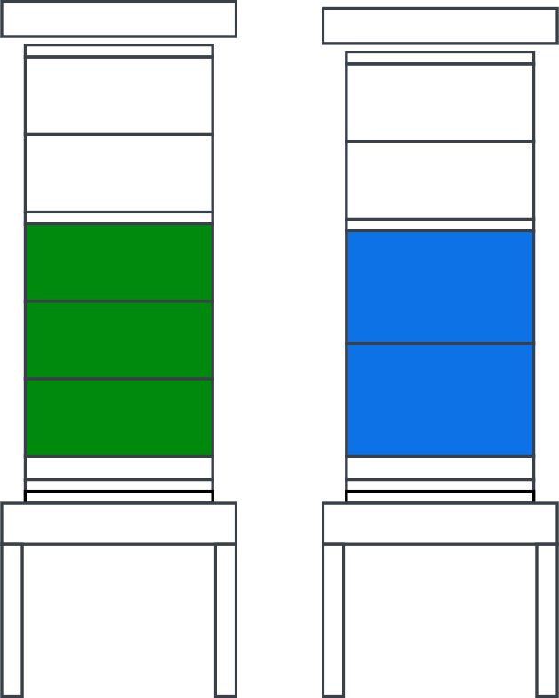

Overview

Typical Langstroth Hive Parts
When you are starting with beekeeping, the various parts of the hive can be a bit confusing: The articles in this site are designed to help with that. What is often not addressed are two other topics which I've outlined below
Hive Type to Get
There are a boatload of hive configurations you can chose for keeping bees, and if you stay with this hobby long enough, you will probably test out a number of them. But when you are getting started, I highly recommend the following approaches.
Use Langstroth hives
These are the very commonly used and you will be better able to find a mentor to assist you with these. Also, you will be better able to find vendors who can sell you the parts you will need.
Also, you will find many auxiliary parts for use with Langstroth hives:
- Frame hangers (example) are a very useful tool when working in the bee yard, and these are easily found for Langstroth hive boxes. (Or they are easy to make.)
- Extractors are easily found for Langstroth frames

Hive Brood Bodies Compared
Use medium boxes for both the brood and honey supers
Langstroth hive boxes come in a number of depths, but medium boxes are a great way to start.
Historically, the brood boxes were deeps (as shown in blue to the right) and the honey supers were mediums. But, by using medium boxes (as shown in green to the right), you can rotate your frames easier. 3 medium boxes has the same volume as 2 deep boxes, so your bees get the same amount of space for the brood.
Over time, you will need to rotate the old frames out (3-5 years is the expected life of a frame in a hive). The brood box frames seem to be the dirtiest and get rotated out first, so having them the same size as the honey supers means that the drawn frames can be rotated down from the honey supers to the brood boxes to fill in for the brood frames which are being rotated out.
Also, if you get into a situation where your brood boxes are honey-bound and there is no space for the queen to lay eggs, you can move honey frames up into honey boxes, and replace those frames with empty frames.
And finally, having only medium boxes means you have to stock less stuff: Medium boxes and medium frames for everything. Any manufacturer will tell you that having more item numbers (SKUs) equates to higher levels of inventory.
Consider Using 5-frame (NUC) boxes
Langstroth hive boxes come in a number of widths: 5, 8, or 10 frames.
- 10-frame boxes are historically what was used. Thusly, it is easy to get other parts for these (e.g., queen excluders, slatted racks, etc.).
- Note: 10-frame or 8-frame boxes are good alternatives if you cannot get to your hives in a timely manner for inspections. One example includes an apiary you are situating at a remote site.
- 8-frame boxes are a good alternative to 10-frame boxes as they are 20% lighter. This is easier on the back. As the 8-frame boxes are becoming more common, many of the 10-frame parts are also available for 8-frame boxes. But not all vendors supply them.
- 5-frame (NUC) boxes are easy to handle, and the bees seem to work best in them. Plus, a 5-frame honey super is a lot lighter than a 10-frame one! But do be aware that some things are not readily available for 5-frame boxes. I've had to make my own slatted racks. And for a queen excluder, you can cut a 10-frame plastic one in half, but I can't find them readily available. Otherwise, you have to use one for a larger box and let it hang out over the sides.
Use wax foundation
Langstroth hive frames are available in a lot of types but the most common types of foundation seem to be wax or wax-coated plastic. My experience (and many others as well) has been that the bees take to the wax foundation much faster than the wax-coated plastic.
The wax-coated plastic has some advantages and some proponents. It is a bit sturdier and has less potential for damage in the extractor (particularly the tangential extractors). So, you may choose to add this to your hives at a later date. But start with wax foundation.
Vendor to Use
This seems to be an odd consideration, but it does matter. The issue is the bee space. That ¼ to ⅜ inches of space could be on the tops of the bars or the bottom or split between them. If you were to cut a hive box in half, you'd see images like below. The bee space between the boxes is noted in green.
 Bee space at the bottom |
 Bee space at the top |
 Bee space split between the top and the bottom |
Different vendors place the bee space differently in their boxes. So picking one vendor for all your equipment will help ensure that boxes can be stacked and provide adequate bee space between them.
These configurations work
|
|
|
|
But these configurations do not work
|
Too much space -- encourages spurious comb building in the area |
No space for the bees to move about between the boxes |
Not enough space for the bees to move about |
Notes on Making This Equipment
When making a hive equipment, all wood used must be untreated. Pressure-treated wood is made with some nasty chemicals and these are not good for the bees.
Dave C. on the Beekeeping for Newbees Discord channel published directions for making 5-frame and 10-frame equipment. The PDFs are linked below.
More Information
Published Articles
- Comparison of colony performances of honeybee (Apis Mellifera L.) housed in hives made of different materials (08 May 2019), by Yaşar Erdoğan
- "Wooden World" by Ott, Jeff. In "Gleanings in Bee Culture" magazine, February 1992, pg 80-87 (excerpt). This really addresses the discussion above in Vendor to Use.
Books and Papers
- 5-frame NUC Parts (pdf), by Dave C.
- 10-frame Langstroth Hive Parts (pdf), by Dave C.